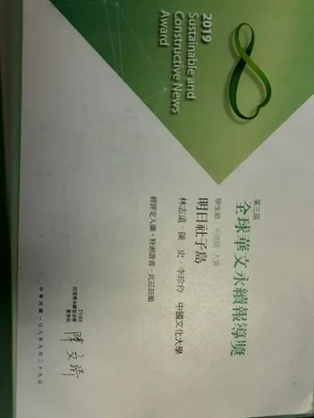
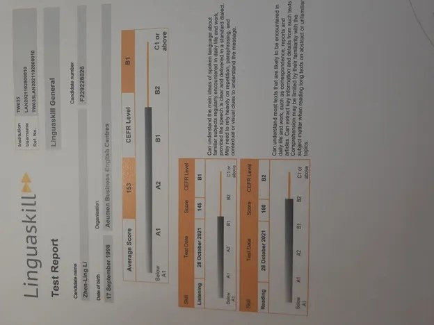

個人資料
- 姓名
- 李珍伶（女、30 歲）
- 通訊地址
- 新北市林口區文化二 ***
- 主要手機
- 0900-225-170
- 聯絡電話
- (02) 2977-1270
- timewaitfor@yahoo.com.tw
- 聯絡方式
- 手機連絡，10:00 ~ 18:00
- 就業狀態
- 待業中 可上班日：錄取後隨時
- 駕駛執照
- 普通重型機車駕照、普通小型車駕照
關於我
自傳
您好，我是畢業於文大新聞系的李珍伶，過去在高中校刊社的經歷讓我走上了這段旅程。 目前有幾年的正式職場經驗，在這幾份工作歷練當中，我應用到了大小規模出版業的工作流程及相對應須具備的編採能力； 並且在新聞業幾年的經歷，具備身為編輯、記者須具備敘述及應對的能力；另外也以新聞背景作為專案助理， 協助公司派駐政府機關，執行專案計畫，在近一年的工作經歷，從中獲得專案期程管理和交派之文書作業、 協調溝通，以及危機處理的臨機應變的能力。
而在大學科系專業學習中，曾經入圍 TVBS 永續報導獎，也曾於公視 peopo 暑期實習， 也在校內模擬報社《文化一周》實習近一年，並從上述經驗，掌握撰稿、編輯技巧和議題設定之能力。 累積平面媒體《文化一周》的網站作品和公視公民記者的影音作品。
自傳（English）
Hello, my name is Li Zhenling. I graduated from the Department of Journalism at Chinese Culture University. I currently have nearly five years of full-time professional experience. Through these roles, I have gained hands-on experience with the workflows of publishing operations of various scales, as well as the corresponding editorial and reporting skills required in the field. My years in the news industry have also equipped me with the narrative, interviewing, and communication abilities essential for both editors and reporters.
In addition, I have worked as a project assistant drawing on my journalism background, assisting my company in government-assigned projects. Over the past year in this role, I have developed skills in project timeline management, administrative documentation, coordination and communication, as well as adaptive problem-solving and crisis response.
During my university studies, I was shortlisted for the TVBS Sustainability Reporting Award, completed a summer internship with PTS PeoPo, and interned for nearly a year at the campus training newsroom Culture Weekly. Through these experiences, I strengthened my abilities in writing, editing, and topic planning. I have also built a portfolio that includes written works for the print/online outlet Culture Weekly and video reports produced as a PTS citizen journalist.
公視影音作品（PeoPo 公民新聞）學歷
私立中國文化大學
大學畢業新聞系
2017/9 ~ 2021/10
成淵高中
高中畢業普通科
2012/9 ~ 2015/6
工作經歷 共 4 年多經驗、8 段歷練
記者
2025/9 ~ 2025/12 ・ 4 個月環球生技多媒體股份有限公司
雜誌／期刊出版業 | 台北市信義區
生技媒體執行外媒編譯、活動新聞撰寫、新聞專題製作、新聞撰寫，完成《環球生技月刊》132 期。
數位編輯
2025/4 ~ 2025/6 ・ 3 個月今周文化事業股份有限公司
雜誌／期刊出版業（100~500 人） | 台北市中山區
即時新聞撰寫，追蹤新聞熱度、Google 關鍵字，曾撰寫瀏覽人次逾 50 萬的文章。 協助社群平台、官方網站上稿。
特約採訪記者
2024/8 ~ 2024/12 ・ 5 個月航貿文化事業有限公司
雜誌／期刊出版業 | 台北市大同區
執行《航貿週刊》no.52〈御風啟航 台灣航運新星的養成之路〉特別報導之採訪撰寫。 閱讀報導
專案助理
2023/11 ~ 2024/3 ・ 5 個月群創知識科技股份有限公司
工商顧問服務業（1~30 人） | 台北市中正區
協助政府專案管理相關工作。執行標案企劃之撰寫 Facebook 貼文、新聞稿、場所維運、 專案進度掌握、廣告投放等，同時也參與開標執行作業流程。
助理研究員
2023/3 ~ 2023/7 ・ 5 個月財團法人台灣經濟研究院
其他教育服務業（500 人以上） | 台北市中山區
協助公家機關（數位發展部）研究案相關工作，包括追蹤專案計畫時程、研究案資料收集、 單位協調溝通，及場所主管交派任務。
編輯
2022/2 ~ 2023/1 ・ 1 年聯合報系經濟日報
新聞出版業（500 人以上） | 新北市汐止區
每日出刊的報紙排版、下標、編輯作業。
記者／採編
2021/11 ~ 2022/2 ・ 4 個月財團法人中華民國消費者文教基金會
社會福利服務業 | 台北市大安區
主要工作將《消費者報導雜誌》出刊、舉辦記者會，活動露出增加媒體影響力，發想消費議題。 執行 488、489、490 期。
實習
2019/8 ~ 2019/8 ・ 1 個月財團法人公共電視文化事業基金會
電視業（500 人以上） | 台北市內湖區
暑期公視公民記者的實習，從事為期 1 個月的記者實務，為影音報導。
技能
語言能力
| 語言 | 聽 | 說 | 讀 | 寫 |
|---|---|---|---|---|
| 英文 | 中等 | 中等 | 中等 | 中等 |
| 台語 | 中等 | |||
擅長工具
- 程式語言類 Python
- 資料庫類 MariaDB
- 多媒體設計類 Premiere
- 排版軟體類 Adobe InDesign
- 作業系統類 Windows 10
- 辦公室應用類 PowerPoint、Word
工作技能
- 文件或資料輸入建檔處理
- 文書處理／排版能力
資格認證
-
普通小型車駕照中華民國交通部公路總局
-
普通重型機車駕照中華民國交通部公路總局
-
Linguaskill（劍橋領思 - 實用英語組）考試院 ｜ 153
-
TOEIC（多益測驗）ETS 美國教育測驗服務社 ｜ 5402026/08 ~ 永久有效
附件

